Early this week I came across quite the most amazing Firefox extension I've seen for some time - Scrapbook. This extension lets you make a local (i.e. offline) copy of a site, and then do various nifty things with it - make personal annotations (or even shared ones if you have shared drive access), text highlighting, even search.
This extension particularly resonated with me when I came across it because earlier in the day we had been discussing at TU120 course team meeting the frequently asked question about how long students retain access to course materials from our online courses. (Several weeks is the answer - then the material is no longer avialable).
There is also a not totally unrelated issue at the moment with OpenLearn content, in the sense that the URLs for the current materials appear not to be very stable (though I have been told this is something that will be addressed in the near future...) - so while the content may stay up there, it may not be at the place you bookmarked...
Anyway - printing out online materials is one way of getting a persistent copy of onine materials, as is downloading them - although when pages can only be saved one at a time this can be quite a time consuming process.
So this is one area where Scrapbook caught my interest - the ability to download very easily all the pages from a course. So for example, we could go to the index page of an OpenLearn course, which has links to all the course content pages from it, and use those links to download all the course information:
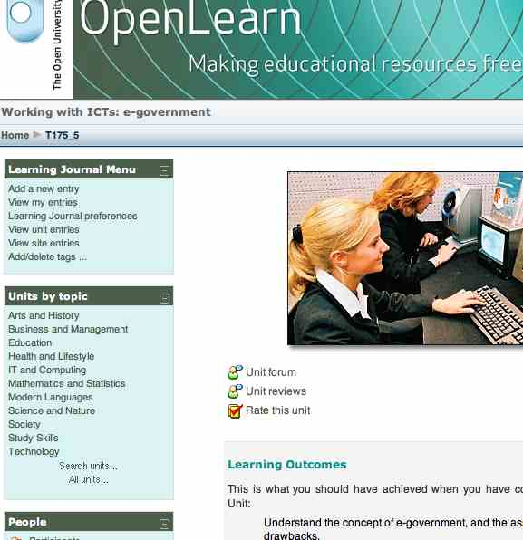
A similar approach can be used for saving local copies of Technology short course pages: go to the course index page (that is, click on the Index tab , rather than Home tab) of a Relevant Knowledge course and download in one go the course content pages linked to therefrom. Readers of this blog on any of these courses may wish to pass this info on via a course conference forum ;-)
Grabbing the index page - and the pages that are linked to from it - is easy: simply take the 'Capture Page As..' option from the Scrapbook menu:
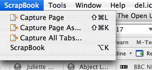
You now have to configure the download - take the links of depth 1:
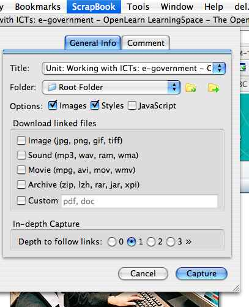
This gives you a list of all the pages that are linked to, which is way more than the ones you actually want:
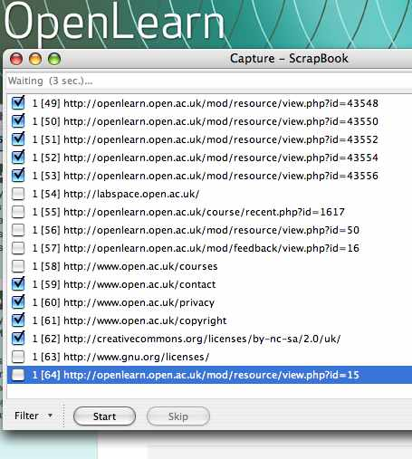
There are two ways of getting round this - one is to pause the download as soon as you can and just select the pages you want to download. One way of identifying which links those are is to hover over the links you want to download (or exclude) on the index page and make a note of the URL that should appear in the status bar at the bottom left corner of the browser window:
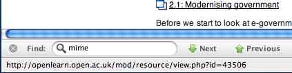
Another way is to use the skip button to skip the download of the next link in the download list - there is a 3 second delay between downloads to give you time to make this decision for each link.
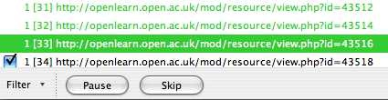
For this 'Capture Page As...' download option., all the saved files are access via a single Scrapbook item, which you can find in the Scrapbook sidebar:
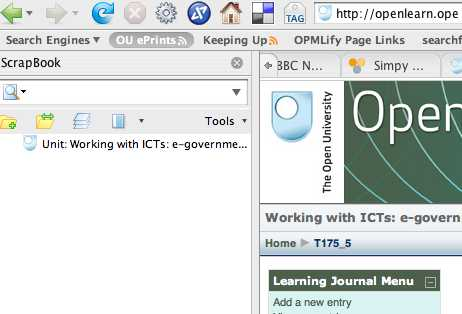
(It is also possible to save each page as separate Scrapbook items, although local navigation between the pages will not then be respected.)
If you select an item in the Scrapbook, you are taken to the local copy of that Scrapbook item. Two toolbars are then available at the bottom of the screen, that can be configured from the Scrapbook item right at the bottom of the browser window:
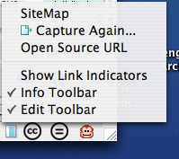
The Edit toolbar:
And the Info toolbar:
The Info toolbar actually provides a sitemap to all the pages you downloaded:
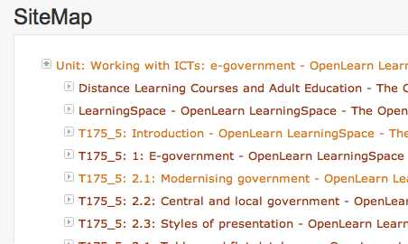
This is handy, because although the downloaded material has all the links localised, (so the navigation through the OpenLearn material is within your downloaded local copy of the material) the current OpenLearn navigation through materials is all but unusable (although solutions are in principle available).
The utility of the Scrapbook as a study support tool now moves up another gear. For example, you can highlight or annotate the saved content:
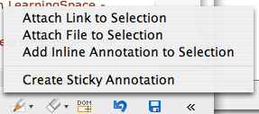
Annotations can either be inline (and displayed via a popup tooltip) or floating 'post-it' type notes:
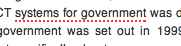
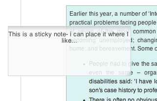
Another hand tool is the ability to search through the save content:
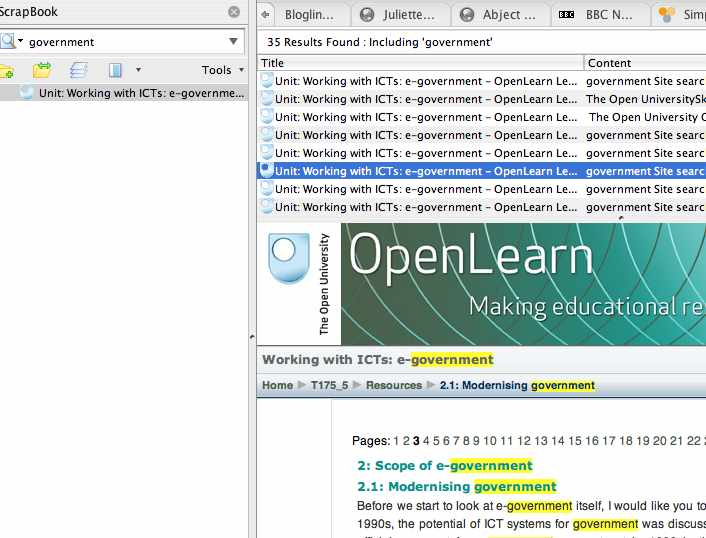
More tools are available too - the Scrapbook tutorial is well worth a read, even if you don't get this extension, just so you know what you're missing out on.
One thing I liked in particular that I picked up from the tutorial was the add-on (yep - the Scrapbook extension can be extended with further add-ons - how neat is that? ;-) that allows you to back up your local, annotated, archived materials up to the box.net online storage service (which I actually first got into through the PageFlakes webtop...).
If the new OU MyStuff ePortfolio supports an API, then it may be worth hacking together an extension for Scrapbook so that it can be used with that service.
(Of course, what I'd really like to see is MyStuff provide an option that would allow students to use the MyStuff interface with their own online storage service, so they could keep their content where they wanted.)
Perhaps the ultimate toy would be to add Scrapbook style bulk download functionality (and maybe the annotation and highlighting tools) to Zotero, which provides more sophisticated collection management tools, as well as bibliographic reference tools?
Posted by ajh59 at November 3, 2006 12:30 PMNot sure, not sure...
this certainly has potential, but my quick thought is that we're starting to get lots of cool answers (with these undoubtedly great tools), but I've suddenly forgotten what the QUESTIONS were!!!
Don't forget that on LabSpace you can already download a complete bundled Unit anyway, without going through all those ScrapBook steps (cool as they are, no one's gonna do it). True, LabSpace downloads are also not for the faint-hearted... but at least you can get everything with one or two clicks.
As far as ..."their own online storage service, so they could keep their content where they wanted"... I object to the italicized 'their/they', as if this is some kind of great liberating policy: our stuendts can already keep their content where they want: at home! OK... that doesn't help me with my ePortfolio, with peer learning, etc., but with friends like "online pervasive storage and 22-steps-to download and annotate, and tutorials to read", who need enemies?
Yes, it'll get simpler, but that's where we need to be clear about what questions we (as educators) are asking.
Posted by: Marc Eisenstadt at November 3, 2006 06:55 PMFirst off, I agree with huge chunks of what you say, and was in part reflecting on this myself this afternoon, particularly on the reasons behind developing and blogging about a lot of this stuff.
And developing answers to previously identified relevant questions is undoubtedly one way of providing focus:-)
However.....
... to pick up on some of your points:
"Don't forget that on LabSpace you can already download a complete bundled Unit anyway, without going through all those ScrapBook steps":
Okay - so here comes me as Jo Punter, proto-student, wanting to add personal value to this material by annotating it.
Which I can't do in OpenLearn, even though I read about some HTML annotation tool called, err, D3E, was it, on the KMi website?
Note that I'm not interested in developing this material as an educator to feed it back to LabSpace - I'm coming specifically to OpenLearn (as mentioned in the post) because I'm a learner wanting to engage with the content.
But I hear I can get the content through LabSpace so I click on the Labspace link from my Openlearn course. Hmmm - top level, no click through from Openlearn course content page to corresponding Labspace page, but that's ok, because that could be confusing.
Eventually find my way to the same course - hmmm, no download link, maybe I have to register, login in, find the course (again) and hope there is a download link.
There is, good - download the material after a - guess what - clunky process and get the XML. Hmm, what do i do with it now; the Help mentions some XML tools (not sure if they're free) but I do happen to know that there are things called stylesheets that let you preview XML documents in a browser.
So there's a preview CSS file in the download bundle perhaps; no ; hmm - maybe on the site - I'll try a search, or some forums, or... I give up...
XSL, I think you can use XSL to view XML in a browser - ah, yes, and XSL file in the download bundle; hmm, it seems to want to generate lots of files, and I don't think my browser will cope with that, or the online XSLT processor I found in my colleague's bookmark list.
I'll look at the how to preview doc...hmm, saxon, ah yes, I think I've heard of that. I need Java don't I. I seem to remember using a similar sort of tool on a windows machine, but I'm on a mac now; how do I set the Java classpath up so I can use Saxon?
So maybe I can use a free online XML editor to at least open up the XML document. There are a few around, bu the most promising seems to want a schema? Ah - here we are, xsd. Oh - it says it wants a RelaxNG schema or a DTD. Hmm... etc etc etc.
"True, LabSpace downloads are also not for the faint-hearted... but at least you can get everything with one or two clicks."
Err, everything being the download, I take it; how many clicks till you get a preview, if you don;t have any XML tools installed; or maybe you know that Word or OpenOffice grok XML (again, some sort of minimal previewer would be handy, perhaps...?)
Once I've downloaded the HTML into the Scrapbook, it's a) navigable HTML; b) annotatable; and c) exportable; which means I can upload it to the forum so that other people - with a single click - can download it and use it in their scrapbook.
And we're talking people who just want an offline copy of the material to work form, remember, not remix and submit back.
Scrapbook is far from ideal -but it's a damn site quicker than clicking on every page in an OpenLearn course, saving it (or printing it out) individually, and then finding between page navigation doesn't work (that's actually an assumption on my part; but I'm willing to bet it won't work without even looking at the HTML...)
By the by, I was chatting to someone who works on T175 (the OU paid for version) today, and he said they made .chm (Microsoft compressed/archived HTML) versions of the material available for students, along with easy to use guidance on Linux and Mac viewers for the same.
That's not available for OpenLearn course content, is it?
I understand, of course, that part of the OpenLearn experiment is to draw people in to an OpenLearn learning community, and is not really about making the content so freely available that people can grab it in one click and run away with it so they can study it offline at their leisure without ever having to return to OpenLearn.
But there's nothing in the license (as I understand it) that stops other people developing that sort of solution using content they have pulled from LabSpace and making it available in an far more portable way than OpenLearn does.
Which just makes me want to ask the question why OpenLearn doesn't make the content portable for its constituency (novice learners, perhaps) in the way that LabSpace does for it's audience (hard core techies...)
"As far as ...'their own online storage service, so they could keep their content where they wanted'... I object to the italicized 'their/they', as if this is some kind of great liberating policy: our students can already keep their content where they want: at home! OK... that doesn't help me with my ePortfolio,"
That was EXACTLY the point (in a post which I admit was conflating several ideas: 1) OpenLearn students getting a personal copy of the content for use offline, and 2) OU students lodging content in their ePortfolio.)
Who owns (in the sense of stores and controls access to) the content that the students create and store in OU environments - whether that refers to stuff in the ePortfolio/MyStuff, blog entries, journal entries, HTML material annotations (some courses let students add comments to particular areas of the online material), wikis (in the near future), course forums/conferences, online chats (if we start to offer such things - I'm forever searching over chat transcripts I've had with people in GTalk digging out links people have passed to me) and so on?
I haven't looked at the ePortfolio/MyStuff mock-ups for a bit, or Moodle journal areas at all, but I sure do hope there's a hugely prominent 'Export MY CONTENT' button someone that lets users take their content away at a click in a standardised, easily viewed format.
The policy with elearning courses for OU students is clear - you lose access to the online content several weeks after the end of the course.
But what's the more general policy wrt student generated content? If we have students with the OU for N years, where N is large, are we going to maintain their ePortfolio access - and the content - in a possible 2-3 years gap in their study (or perhaps they've dropped out? Or died??)
"online pervasive storage and 22-steps-to download and annotate, and tutorials to read", who need enemies?
Did I send you the 17 step guide to getting library resources that - according to the advice I received on campus from someone behind the firewall (and with the correct IP address...) - was only two or 3 clicks away at most? ;-)
And as to usability, I challenge you to go to a content page in the middle of any OpenLearn course and reliably click on the link that takes you to section 4.2 (if it exists, section 4 otherwise) of the material...
'who needs enemies'?
Err.... with usability like that, I agree ;-)
But to return to the nub of it - there is sooooo much technology out there, and so much good, useful and very nearly usable technology out there, that is largely unused/ignored because people either never come across it, or they don't invest the time in exploring how it can be used to good effect, that I wonder why we keep on building tools.
How much effort has gone into - and continues to go into - MyStuff, when other solutions are available. Of course., none of them do quite what we want; so we build our own; as does everyone else; and then do we explore the power of the tools we have to hand; does anyone in AACS understand how powerful First Class - if properly used - can be?
I didn't build Scrapbook; I found it on the web; it's months old. It does a goodish job. Could it be OUSeful? Maybe, as could any of a number of other solutions out there.
Do we know how OUseful they are? Were PRE-EXISTING tools like this used in the specification phase of MyStuff to explore student needs, expectations, user models etc. wrt storage and annotation tools?
Does ANY OU system exploit browser extensions that will potentially add value to a course for thousands of students (well, it's likely gonna be thousands with a student population of 180,000 to draw from).
There are good reasons why we don't push 'minority extensions' to students of course - we can't support them. But does that mean we shouldn't a) be aware of at least some of them; b) try to explore them ourselves to see what they can do, (before moving on to the next toy without exploring a fraction of what our current tools can do, particularly in combination with each other); c) use them in small trials with students to feed info back into our own tool development processes. These can be viewed as early prototypes, for example, and used to capture/explore user requirements and usability issues in a way that questionnaires and paper exercises don't.
Hmm - I think I've been ranting for far too long...been a long day :-(
Posted by: Tony Hirst at November 3, 2006 08:43 PMHeh... generally, I agree!
I mean really!
Just three things...
Re
> err, D3E, was it, on the KMi website
Interesting, though now a very old tool, the so-called 'ubiquitous' D3E let's you wrap a context-specific discussion forum/site around any URL with one click... just type in the URL into the form, and presto-mundo... like I say, a bit dated in Web2.0 terms, but still works out-of-the-box: http://ud3e.open.ac.uk/
> not for the faint-hearted
I was probably understating, i.e. I already knew that it was extremely tricky and idiosyncratic, and yes, right now it is extremly HARD, and not at all for the audience you are addressing... but it's very early days (whole thing only just released October 25th, and I know that all these issues are 'high on the radar';
re difficulties of early-stage navigation and "what the heck do I do now?": I've done my own separate study of "what happens during the 5 minutes of use", and will pass on to you separately - these are all known issues, and largely in hand...
re ownership of content, annotation, deploying 3rd party tools: sure, generally in agreement, but nevertheless we need a stronger vision of how the value-added tools, even *IF* they could be provided with 1-click simplicity, are really going to pay off
Sound like it's time for a coffee or a beer to pursue this...
;-)
Posted by: Marc Eisenstadt at November 5, 2006 01:11 PM